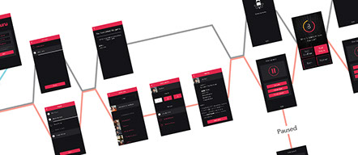
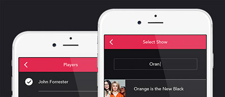

3/30/2015
We've gotten a lot of good feedback on Plot Guru. Friends, family, co-workers, and mentors alike are all pretty on-board with the idea. But sometimes – just every once in a while – I'll get that one comment:
"Seems annoying."
And you know what? I can definitely understand where this comes from. When a guy plops down on his couch for the evening to watch a couple rounds of The Walking Dead, he's just in it for the mindless entertainment of seeing zombie heads fly. Having his show intermittently interrupted by an app asking trivia questions just doesn't seem very appealing.
But here's the thing – Plot Guru isn't for that guy.
We've done our research. It's obvious that Netflix, Hulu, Amazon Prime, and other online streaming services are the future of television viewing. Perhaps less obvious is the changing nature in which people watch their favorite shows – particularly the massive popularity of binge-watching and the widespread preference to watch television with other people.
So let me ask you this: When you're watching Netflix with your friends, do you just sit quietly there on the couch? Hell no! You're talking, debating, and discussing the characters on screen. You're predicting what will happen next. You've got your phone out checking your texts or browsing Reddit. Maybe you've gotten yourself a nice snack and a drink.
Here's my point: When people view television in groups, they're active viewers. And we've designed Plot Guru to live directly in this zone of active viewership. We've designed the game specifically to complement the social television viewing experience, not detract from it. It's not for that lone vegetable chilling on the couch. It's for roommates, friends, and family that have gotten together to share a TV show together.
Despite this, we also know that at the end of the day, the show on your TV is more important than our app. That's cool though, we're not jealous. We know our place. We're not here to replace TV – we're just here to make it more a little more fun, interactive, and competitive.
That's why each question is timed for 15 seconds. We want your eyes on the TV, not on the phone screen.
Gameplay is linear, allowing you to keep your attention on the show instead of wandering through the app.
UI also comes into play here – the app is designed to be as simple, beautiful, and functional as possible, with a dark theme with red accents. We don't want to blow out your eyes with a bright white screen in a dark room. Plus, the color red actually serves to protect your low-light vision.
Here at Plot Guru, we're looking out for ya!